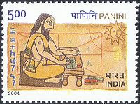

Translate this page:
दुनिया की सबसे पुरानी भाषा "संस्कृत" और इस भाषा की व्याकरण को जिस विद्वान ने दुनिया को बतलाया, समझाया, कि भाषा कैसे बोली जाएँगी, पढ़ी जाएँगी, और लिखी जाएँगी, उनका नाम था "महर्षि पाणिनि" (Panini)। उन्होंने अष्टाध्यायी = आठ अध्यायों वाली (8 chapters) में उस सबकी पूरी व्याख्या की है।
उसके बाद दुनिया के तमाम इलाकों में रहने वाले लोगों ने अपनी-अपनी बोलियों की व्याकरण को पहचाना।
The history of linguistics begins not with Plato or Aristotle, but with the Indian grammarian Panini. -- Rens Bod, University of Amsterdam
-->भाषाएँ इलाकों की होती है। जैसे पंजाब की भाषा पंजाबी, गुजरात की गुजराती, बंगाल की बंगाली, जर्मनी की जर्मन, स्पेन की स्पेनिश आदि- आदि
भाषा (language): अपने विचारों को दूसरे तक पहुँचाना हो अथवा दूसरों के विचारों को ग्रहण करना हो, इन दोनों ही कामों के लिए जिस माध्यम की आवश्यकता होती है, उसे हम उसे "भाषा" कहते हैं। भाषा ही मनुष्य के सामाजिक ताने-बाने का असली धागा है। भाषा संस्कृत के भाष् धातु से बना है, जिसका अर्थ है बोलना या कहना यानी बोलना या कहने से भाषा शुरू हुई वह लिखने तक पहुंची।
भाषा conveyor belt (वाहन पट्टी) की तरह होती है, जैसे वाहन पट्टी सामान को एक जगह से दूसरी जगह लेकर जाती है, उसी तरह भाषा भी हम सबके विचारों, संस्कृति, परंपरा, रीतिरिवाज़, आदि की सही सूचना को एक पीढ़ी से दूसरी पीढ़ी तक लेकर जाती है।
किसी ने सही कहा है: "जो समाज अपनी भाषा से कट जाता है अपनी ज़मीन से कट जाता है"
अगर आप दुनिया के तमाम विकसित देशों को देखोंगे तो एक चीज़ आपको अभिन्न नज़र आएँगी और वो है कि वो शिक्षा से लेकर अपना सारा काम अपनी ही भाषा में करते है। जैसे :- अमेरिका, जापान, चाइना, यूरोप के तमाम देश, रूस आदि।
अब बात करते है भाषा आखिर होती क्या है?
इन तीनो में असल में भाषा क्या है?
क्या "लिपि" भाषा होती है?
अगर मैं एक वाक्य दो अलग लिपियों में लिखता हूँ तो क्या भाषा बदलती है?
"देवनागरी लिपि: हिंदी बेहतरीन भाषा है"
"Roman script: Hindi Behtreen bhasha hai"
आप इन दोनों को एक जैसा ही पढ़ेंगे।
नोट: आप अपनी भाषा किसी भी लिपि में लिख सकते हो, लिपि बदलने से भाषा नहीं बदलती।
क्या "शब्द" भाषा होते है?
एक उदाहरण से समझते है:
एक स्कूल के प्रिंसिपल ने टीचर्स की मीटिंग बुलवाई और टाइम पर सभी को आने को बोला। इशू था कि कितने स्टूडेंट्स पास या फेल हुए है। होशियार, ख़राब और सुस्त स्टूडेंट्स की लिस्ट बनाने को बोला गया सभी रिजल्ट से नाराज़ थे, उस शहर का वो बेहतरीन स्कूल है। वहां बच्चे भी अमीर घर के पढ़ते है। आदतों का बहुत प्रभाव पड़ता है। काफ़ी मात्रा में टीचर्स मीटिंग में आए।
आइए इस पैराग्राफ में इस्तेमाल शब्दों को देखते है:
नोट: अगर शब्द भाषा है तो इस पूरे पैराग्राफ की भाषा "English", "फ़ारसी", "अरबी" होनी चाहिए मगर जवाब है नहीं।
एक वाक्य लिखा जाए: ये रूम एयर-कंडीशनर है।
अब इसमें 4 शब्दों का इस्तेमाल हुआ है और दो शब्द "रूम और एयर-कंडीशनर" जिसमें सारी जानकारी है, जो कि इंग्लिश के है फिर भी ये शब्द इस वाक्य को English का नही बना पाए क्यूंकि एक तरफ "ये" लिखा है और दूसरी तरफ "है"। व्याकरण ने तय किया है कि भाषा कौनसी है ना कि शब्दों ने।
नोट: आशा करता हूँ कि दोस्तों आपको मेरी बात समझ आई होगी।
कुछ ऐसे शब्द जो अंग्रेजी, फ़ारसी, अरबी, तुर्की, पुर्तगाली भाषा के है :-
स्कूल (School), स्टेशन (Station), अफ़सर (Officer), इंजन (Engine), डॉक्टर (Doctor), हॉस्पिटल (Hospital), टेलीफ़ोन (Telephone), टेलीविज़न (Television), रेडियो (Radio), बैंक (Bank), टाइम (Time), सिनेमा (Cinema), लौटरी (Lottery), सर्कस (Circus), नंबर (Number), बेंड (Band), हीरो (Hero), साइकिल (Cycle), ट्रेन (Train), पेंसिल (Pencil), कंप्यूटर (Computer), कार (Car), बस (Bus), पेन (Pen), टिकेट (Ticket), पास (Pass), फेल (Fail), सीट (Seat), सूट (Suit), सेल (Cell), बटन (Button), पेपर (Paper), टायर (Tire), ब्लेड (Blade), फाइल (File), बिल (Bill), मोटर (Motor), बल्ब (Bulb), लाइट (Light), लेटर (Letter), कैल्कुलाटर (Calculator), प्रिंसिपल (Principal), वार्ड (Ward), नर्स (Nurse), माइक (Microphone), चार्जर (Charger), बटेरी (Battery), मैच (Match), ग्लास (Glass), टेबल (Table), चेयर (Chair), मशीन (Machine), बेग (Bag), हंगर (Hanger), गिटार (Guitar), पोस्टर (Poster), पिचर (Picture), पर्स (Purse), संढेल (Sandal), प्लास्टर (Plaster) etc.
आबरू (Dignity), आतिशबाजी (Firework), आराम (Rest), आमदनी (Salary), आवारा (Straggler), कमरबंद (Belt), किनारा (Shore), गिरफ़्तार (Arrest), ज़हर (Poison), जादू (Magic), जुरमाना (Penalty), नौजवान (Young), बेवा (Widow), मुफ़्त (Free), बेईमानी (dishonesty), सूद (Interest), रंग (Color), सितार (Sitar), हफ़्ता (Week), सुर्ख (Red), सफ़ेद (White), नारंगी (Orange), दूर (Far), हमेशा (Ever), हरदम (Each moment), शायद (Maybe), पास (Near), एकबार (Once), ख़राब (Damaged), ताज़ा (Fresh), गरम (Warm), ईमानदार (Honest), तंग (Tight), संकरा (Narrow), शहर (City), सुस्त (Lazy), शहरी (Urban), देहाती (Rural), होशियार (Intelligent), नाराज़ (Upset), हिंदी (Hindi), हिन्दुस्तानी (Indian/Hindi) and कमरा (Room) etc
अमीर (Rich), अजीब (Strange), अक्ल (Intelligence), आदत (Habit), औरत (Woman), इज्ज़त (Reputation), ईमारत (Building), इजाज़ (Dear), इमान (Dignity), किस्मत (Destiny), किस्सा (Event), जलसा (Protest), जनाब (Mister), जवाहर (Gem), तारीख (Date), जहाज़ (Ship), दंगा (Riot), तरक्की (Progress), मतलब (Meaning), राय (Advice), अदाब (Manner), आख़िर (At last), असली (Original), आशिक़ (Lover), शुक्रीया (Thanks), अख़बार (Newspaper), सियासत (Politics), बस (Enough! / That’s all!), क़ानून (Rule), खबर (News), ख़बरदार (Careful), वक़ालत (Advocacy), वक़्त (Time), हर्जी (petition), जिला (District), तालुक (Relation), मुल्क (Country), वतन (Country), तमीज़ (Etiquette), कमीज़ (Shirt), उस्ताज (Mister), फिरंगी (Foreigner), शकर (Sugar), जुर्म (Crime), चाय (Tea), ख़्वाब (Dream), फरमाना (To tell), जुरमाना (Penalty), हकूमत (Governance), हुकुम (Rule/Command), सलामत (Safety) and काफ़ी (Enough/Plenty) etc.
कालीन (Carpet), कुली (Coolie), चेचक (Smallpox), चकमक (Clear), तमगा (Medal), तोप (Canon), बेगम (Wife), बहादुर (Bold), मुग़ल (Mugal), अदालत (Court), आज़ाद (Free), बादाम (Almond), सवाल (Question), जवाब (Answer), बारूद (Dynamite), दोस्त (Friend), दर्द (Pain), दीवार (Wall), दुकान (Shop), दुनिया (World), दुश्मन (Enemy), अजनबी (Stranger), चाकू (Knife), फकीर (Beggar), दूरबीन (Binocular), अगर (If), मगर (But), ग़म (Sorrow), ग़रूर (Proud), गुनाह (Crime), हवाः (Air), हाज़िर (Present), हफ़्ता (Week), हिसाब (Calculation), हलवा (Pie), क़लम (Pen), खरबूजा (Watermelon), कातिल (Murderer), किताब (Book), इन्सान (Human), कोफ्ता (Cutlet), मासूम (Innocent), मुसाफिर (Guest), मैदान (Ground), नफ़रत (Hate), मुसीबत (Trouble), पनीर (Cheese), सादा (Simple), शीशा (Glass), सिर्फ (Only), तमाचा (Pistol), ज़ालिम (Cruel), ज़ंजीर (Chain), शराब (Alcohol), यार (Friend), तवा (Pan), साफ़ (Clean), साहिल (Shore), सब्ज़ी (Vegetable), बाज़ू (Arm), पहलवान (Wrestler) and पुलाव (Vegetable Rice) etc.
अनन्नास (Pineapple), आलपिन (All pin), अलमारी (Cupboard), बाल्टी (Bucket), फीता (Lace/Tape), चाबी (Keys), तंबाकू (Tabacco), साबुन (Soap), तौलिया (Towel), फ़ालतू (Unnecessary) and गिरजा (Church) आदि।
नोट: दोस्तों, आप भी पता लगाइए कौन सा शब्द किस भाषा से लिया गया है।
दोस्तों, अब बात करते है कुछ शब्द जो दो अलग-अलग भाषाओं के शब्दों से बने फिर एक हो गए, भाषा किसी देश की तरह होती है और शब्द लोगों की तरह। दुनिया की तमाम भाषाएं इलाकों की होती है ना किसी धर्म की। जिस भाषा में जितने शब्द वो उतनी बड़ी और ख़ूबसूरत होती है और जितने लोग उतना खुशहाल देश। क्योंकि शब्द ही भाषा है और लोग ही देश है।
| शब्द | क्रमश: भाषाएँ |
|---|---|
| अणुबम, उपबोली, गुरुभाई, परमाणु बम | संस्कृत-हिंदी |
| आवागमन, खेती-व्यवस्था, घर-द्वार, समझौता-प्रेमी | हिंदी-संस्कृत |
| खानापूरी, पेशाबघर | फारसी-हिंदी |
| धन-दौलत, समझौता-परस्त, काम-धंधा, गुलाब-जामुन, खेल-तमाशा, चोर-बाजार, दाना-पानी, बाल-बच्चे, तन-बदन, सीधा-सादा, नौकर-चाकर | हिंदी-फारसी |
| अखबारवाला, किताबघर, मालगाड़ी | अरबी-हिंदी |
| भेंट-मुलाकात, हँसी-मजाक, इमामबाड़ा, रीति-रिवाज, हुक्का-पानी, कफनचोर, पंच-फैसला, चोर-महल | हिंदी-अरबी |
| छायादार, विज्ञापनबाजी | संस्कृत-फारसी |
| गुलाब-वाटिका, मजदूर-संघ | फारसी-संस्कृत |
| टिकटघर, टिकटबाबू, पाकेटमार, पार्सल-घर, पावरोटी, पुलिसवाला, मोटरगाड़ी, रेलगाड़ी, होटलवाला, डबलरोटी, पोपलीला, साइकिलसवार | अंग्रेजी-हिंदी |
| ठलुआ-क्लब, लोहा-फैक्टरी | हिंदी-अंग्रेजी |
| अधिकारी-क्लब, महिला-क्लब | संस्कृत-अंग्रेजी |
| क्रास-मुद्रा, कौंसिल-भवन, प्रेस-सम्मेलन | अंग्रेजी-संस्कृत |
| प्रेस-वार्ता, फिल्मोत्सव, रेल-पथ, रोमांसवाद, सभा-सोसायटी, सूटधारी, तोपगाड़ी | तुर्की-हिंदी |
| तोप-सैनिक | तुर्की-संस्कृत |
| तोपखाना | तुर्की-फारसी |
| अक्लमंद, खबरदार, दगाबाज, जेब-खर्च, सफर-खर्च, हवादार | अरबी-फारसी |
| धन-दौलत, विवाह-खर्च | संस्कृत-अरबी |
| खुशकिस्मत, नमकहराम, नमकहलाल, बे-मौत | फारसी-अरबी |
| कानून-भंग, जिला-प्रशासन | अरबी-संस्कृत |
| इंगलिस्तान, कंपनीबाग, कुलीगीरी | अंग्रेजी-फारसी |
| कोचवान, जेलखाना, डिजाइनदार, नंबरवार, पतलूननुमा, पार्टीबाज, प्लेटदार, फैशनपरस्त, रोलदार, लेक्चरबाज, सीलबंद मजदूर-यूनियन, शक्कर-मिल | फारसी-अंग्रेजी |
| पॉकेट-खर्च | अंग्रेजी-अरबी |
| गोलची, मिडिलची | अंग्रेजी-तुर्की |
नोट: जब तक भाषा की व्याकरण सही है तब तक भाषा सही है।
THIS WEBSITE HAS A MOTIVE TO SPREAD THE INFORMATION ABOUT Web Development.
Developed by Tarun Kumar
Thank you for visiting